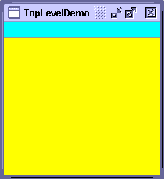
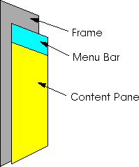
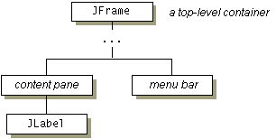

Feedback Form
|
|
Start of Tutorial > Start of Trail > Start of Lesson |
Search
Feedback Form |
As we mentioned before, Swing provides three generally useful top-level container classes:JFrame,JDialog, andJApplet. When using these classes, you should keep these facts in mind:
- To appear onscreen, every GUI component must be part of a containment hierarchy. A containment hierarchy is a tree of components that has a top-level container as its root. We'll show you one in a bit.
- Each GUI component can be contained only once. If a component is already in a container and you try to add it to another container, the component will be removed from the first container and then added to the second.
- Each top-level container has a content pane that, generally speaking, contains (directly or indirectly) the visible components in that top-level container's GUI.
- You can optionally add a menu bar to a top-level container. The menu bar is by convention positioned within the top-level container, but outside the content pane. Some look and feels, such as the Mac OS look and feel, give you the option of placing the menu bar in another place more appropriate for the look and feel, such as at the top of the screen.
Here's a picture of a frame created by an application. The frame contains a cyan menu bar (with no menus) and, in the frame's content pane, a large blank, yellow label.
Note: AlthoughJInternalFramemimicsJFrame, internal frames aren't actually top-level containers.
  You can find the entire source for this example in
TopLevelDemo.java. Although the example uses a
JFramein a standalone application, the same concepts apply toJApplets andJDialogs.Here's the containment hierarchy for this example's GUI:
 As the ellipses imply, we left some details out of this diagram. We reveal the missing details a bit later. Here are the topics this section discusses:
Each program that uses Swing components has at least one top-level container. This top-level container is the root of a containment hierarchy — the hierarchy that contains all of the Swing components that appear inside the top-level container.As a rule, a standalone application with a Swing-based GUI has at least one containment hierarchy with a
JFrameas its root. For example, if an application has one main window and two dialogs, then the application has three containment hierarchies, and thus three top-level containers. One containment hierarchy has aJFrameas its root, and each of the other two has aJDialogobject as its root.A Swing-based applet has at least one containment hierarchy, exactly one of which is rooted by a
JAppletobject. For example, an applet that brings up a dialog has two containment hierarchies. The components in the browser window are in a containment hierarchy rooted by aJAppletobject. The dialog has a containment hierarchy rooted by aJDialogobject.
Here's the code that the preceding example uses to get a frame's content pane and add the yellow label to it:As the code shows, you find the content pane of a top-level container by calling theframe.getContentPane().add(yellowLabel, BorderLayout.CENTER);getContentPanemethod. The default content pane is a simple intermediate container that inherits fromJComponent, and that uses aBorderLayoutas its layout manager.It's easy to customize the content pane — setting the layout manager or adding a border, for example. However, there is one tiny gotcha. The
getContentPanemethod returns aContainerobject, not aJComponentobject. This means that if you want to take advantage of the content pane'sJComponentfeatures, you need to either typecast the return value or create your own component to be the content pane. Our examples generally take the second approach, since it's a little cleaner. Another approach we sometimes take is to simply add a customized component to the content pane, covering the content pane completely.If you create your own content pane, make sure it's opaque. An opaque
JPanelobject makes a good content pane. Note that the default layout manager forJPanelisFlowLayout; you'll probably want to change it.To make a component the content pane, use the top-level container's
setContentPanemethod. For example://Create a panel and add components to it. JPanel contentPane = new JPanel(new BorderLayout()); contentPane.setBorder(someBorder); contentPane.add(someComponent, BorderLayout.CENTER); contentPane.add(anotherComponent, BorderLayout.PAGE_END); //Make it the content pane. contentPane.setOpaque(true); topLevelContainer.setContentPane(contentPane);
Note: Don't use non-opaque containers such asJScrollPane,JSplitPane, andJTabbedPaneas content panes. A non-opaque content pane results in messy repaints. Although you can make any Swing component opaque by invokingsetOpaque(true)on it, some components don't look right when they're completely opaque. For example, tabbed panes generally let part of the underlying container show through, so that the tabs look non-rectangular. An opaque tabbed pane just tends to look bad.In most look and feels,
JPanels are opaque by default. However,JPanels in the GTK+ look and feel, which was introduced in 1.4.2, are not initially opaque. To be safe, we invokesetOpaqueon allJPanels used as content panes.
All top-level containers can, in theory, have a menu bar. In practice, however, menu bars usually appear only in frames and perhaps in applets. To add a menu bar to a top-level container, you create aJMenuBarobject, populate it with menus, and then callsetJMenuBar. TheTopLevelDemoadds a menu bar to its frame with this code:For more information about implementing menus and menu bars, see How to Use Menus.frame.setJMenuBar(cyanMenuBar);
Each top-level container relies on a reclusive intermediate container called the root pane. The root pane manages the content pane and the menu bar, along with a couple of other containers. You generally don't need to know about root panes to use Swing components. However, if you ever need to intercept mouse clicks or paint over multiple components, you should get acquainted with root panes.Here's a glimpse at the components that a root pane provides to a frame (and to every other top-level container):
We've already told you about the content pane and the optional menu bar. The two other components that a root pane adds are a layered pane and a glass pane. The layered pane directly contains the menu bar and content pane, and enables Z-ordering of other components you might add. The glass pane is often used to intercept input events occuring over the top-level container, and can also be used to paint over multiple components. For more information about the intricacies of root panes, see How to Use Root Panes.
|
|
Start of Tutorial > Start of Trail > Start of Lesson |
Search
Feedback Form |
Copyright 1995-2004 Sun Microsystems, Inc. All rights reserved.